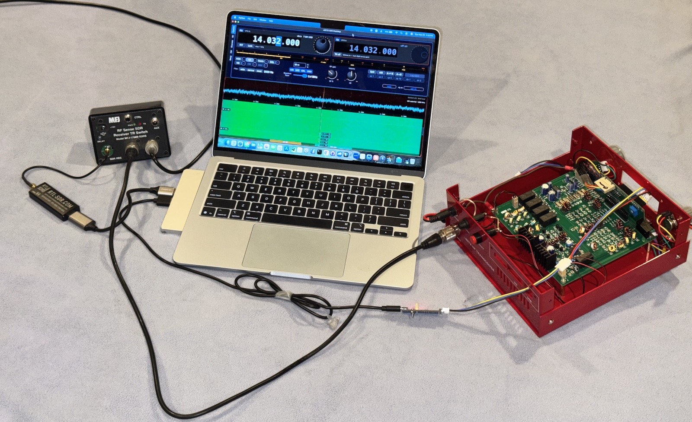
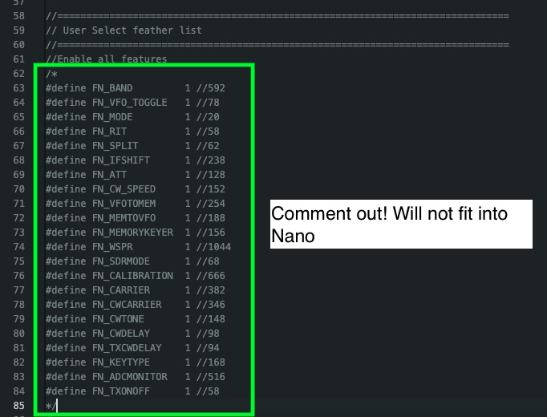
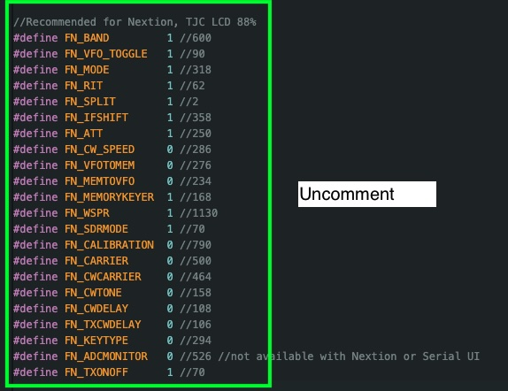
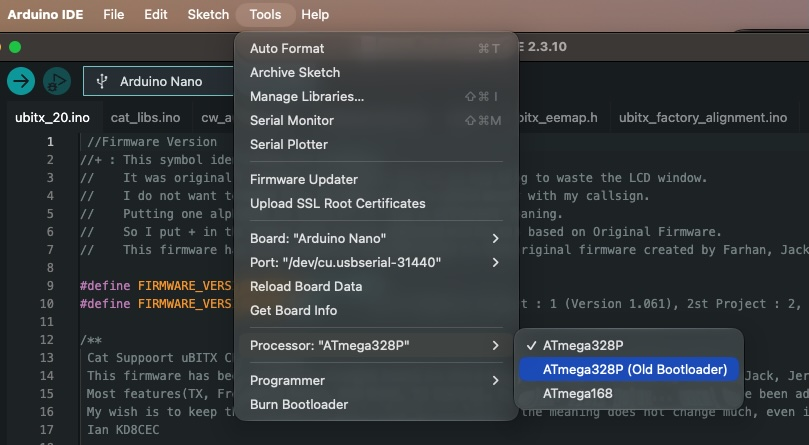
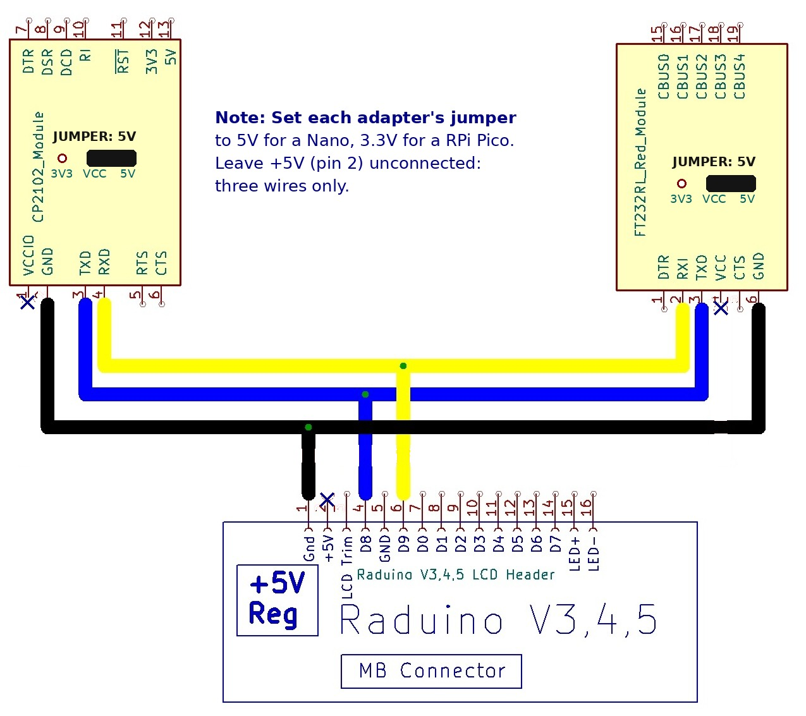
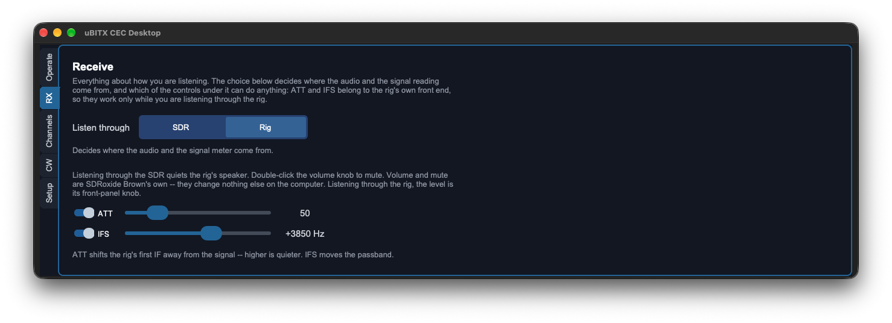
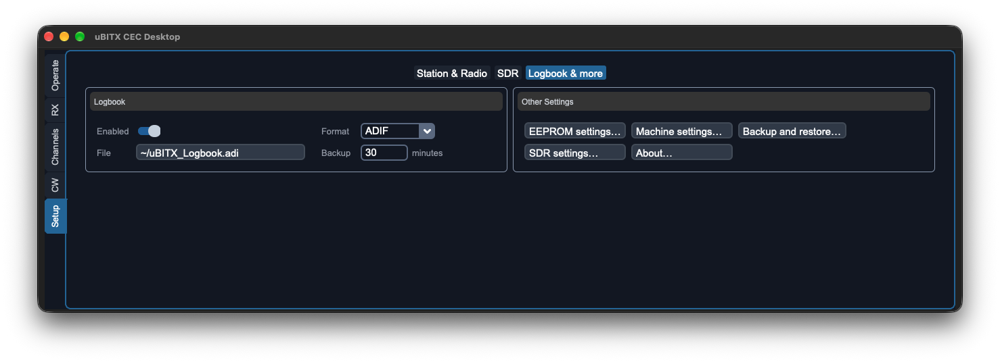

uBITX CEC Desktop
A control panel that runs on laptops that seamlessly merges an uBITX running KD8CEC's firmware with an SDR dongle providing a compelling radio for home operation or xOTA.
By moving the RX and the user interface off radio, uBITX CEC Desktop greatly improves the capability of the popular uBITX radio. Depending on your sdr software choice, you immediately enhance your uBITX radio with:
- AGC
- NR
- NB
- SQL
- RX Filter width control
- CW Peaking
- CW Decoding based on a Neural engine
- Real S-Meter
- Zoomable Waterfall with click to QSY
- QSO Logging
- Improved Split management
- Multiple Channel banks
- Scanning with signal strength
And all this is made possible through the software using the existing Nextion screen protocol to talk to the radio. You can QSY by either clicking on the waterfall, clicking/moving a virtual knob on in the user interface (UX) or if you prefer, using the knob on the front of your radio. The SDR effectively replaces the RX side of your radio giving you a host of features and much better Signal to Noise ratio. The software runs on common laptops or desktops using the OS of your choice: Linux, Windows or macOS. And the software running on your laptop is much easier to use than squinting and trying to touch the right button on your screen!
1. Getting started
What you need
- A uBITX (any version) running KD8CEC firmware 1.2, the Nextion build with Baud set at 57600 (not the default 9600). See Installing KD8CEC 1.2 (57600 baud).
- A USB-to-TTL serial adapter, wired to the radio where a Nextion display would plug in. See The USB-to-TTL adapter.
- A computer running macOS, Windows or Linux (a Raspberry Pi works too), with Python 3.10 or newer. See Installing uBITX CEC Desktop.
- An SDR (RTL-SDR v3,v4,v4L, for example) with one of these programs: SDRoxide Brown, SDRoxide, SDR++, Gqrx or SDRangel.
- With an SDR on the same antenna: a transmit/receive (T/R) antenna switch. This is required, not optional. Without one, the uBITX's transmit power goes straight into the SDR and burns out its input the first time you transmit. A switch such as this one connects the SDR to the antenna while you receive and disconnects it while the uBITX transmits. See Protecting the SDR.

Installing KD8CEC 1.2 (57600 baud)
KD8CEC's firmware 1.2 (it reports itself as +v1.200) replaces the uBITX's original Raduino software. It must be the build for a Nextion display at 57600 baud: that's the protocol uBITX CEC Desktop speaks. The source is in KD8CEC's repository, github.com/phdlee/ubitx, and his notes are on hamskey.com. The original ready made KD8CEC binaries will not be useable, see notes below.
Option A: a ready-built file
Download the file for your uBITX from uBITX CEC Desktop's Releases page on GitHub
- uBITX V3 or V4:
KD8CEC_1.20_Nextion_57600_uBITX_V3_V4.hex - uBITX V5 or V6:
KD8CEC_1.20_Nextion_57600_uBITX_V5_V6.hex
Then upload it to the Raduino's Arduino Nano with avrdude, the program the Arduino IDE itself uses. Connect a USB cable to the Nano's own USB port (not the USB-to-TTL adapter), close uBITX CEC Desktop and anything else that might hold the port, and follow the steps for your computer.
-b 115200. Older ones, and many clones, have the old bootloader and take -b 57600. Try 115200 first; if avrdude says not in sync or programmer is not responding, run the same command again with -b 57600. Neither speed can harm the Nano.macOS
- Install avrdude with Homebrew (
brew.shif you don't have it):brew install avrdude - Find the Nano's port: run this, plug the Nano in, and run it again. The new name is the Nano (a clone usually shows as
/dev/cu.wchusbserial…or/dev/cu.usbserial-…):ls /dev/cu.* - Upload, with your port and file in place of these:
cd ~/Downloads avrdude -c arduino -p m328p -P /dev/cu.wchusbserial1410 -b 115200 -D -U flash:w:KD8CEC_1.20_Nextion_57600_uBITX_V5_V6.hex:i
Linux and Raspberry Pi OS
- Install avrdude, and let your user open serial ports (log out and in again after the second command):
sudo apt install avrdude sudo usermod -aG dialout $USER - Find the Nano's port: it is usually
/dev/ttyUSB0(a clone) or/dev/ttyACM0. This shows the latest:
On Ubuntu, if nols /dev/ttyUSB* /dev/ttyACM*ttyUSBport appears for a clone Nano, the braille service brltty has taken it:sudo apt remove brltty, then unplug and plug the Nano in again. - Upload:
cd ~/Downloads avrdude -c arduino -p m328p -P /dev/ttyUSB0 -b 115200 -D -U flash:w:KD8CEC_1.20_Nextion_57600_uBITX_V5_V6.hex:i
Windows
- Download avrdude for Windows from
github.com/avrdudes/avrdude/releases: the file endingwindows-x64.zip. Extract it, for example toC:\avrdude, and copy the.hexfile into the same folder. - Find the Nano's port: plug it in and open Device Manager → Ports (COM & LPT). A clone shows as USB-SERIAL CH340 (COM5) or similar; note the COM number. If it shows with a warning sign, install the CH340 driver (search "CH340 driver" on the WCH site).
- Open PowerShell and upload, with your COM port and file:
cd C:\avrdude .\avrdude.exe -c arduino -p m328p -P COM5 -b 115200 -D -U flash:w:KD8CEC_1.20_Nextion_57600_uBITX_V5_V6.hex:i
A good upload ends with avrdude done. Thank you. after writing and then verifying the flash.
Option B: build it yourself
- Install the Arduino IDE, download KD8CEC's source (
github.com/phdlee/ubitx, release 1.20), and openubitx_20/ubitx_20.ino. - In
ubitx.h:- make sure
#define UBITX_DISPLAY_NEXTIONis the one display line not commented out; - set
UBITX_BOARD_VERSIONfor your radio: 4 for a uBITX V3 or V4, 5 for a V5 or V6; - comment out
#define USE_I2CSMETER(line 42): put//in front of it. That line is for an extra S-meter Nano on the I2C bus, which uBITX CEC Desktop doesn't use; without it the firmware reads the radio's own S-meter sensor; - switch the feature list to the Nextion one. Comment out the "Enable all features" list (lines 62–83 of the unchanged file, from
#define FN_BANDthru#define FN_TXONOFF): put/*on a new line before it and*/on a new line after it. Then turn on the "Recommended for Nextion, TJC LCD" list further down: delete the/*on the line above//Recommended for Nextion, TJC LCD 88%, and the*/after its last line,#define FN_TXONOFF 1 //70. (In the unchanged file those are lines 137 and 161; after adding the two lines above, 139 and 163.) With every feature on, the firmware is too big for the Nano's memory and the upload fails.
 Screenshot to come: the top of ubitx.h.
Screenshot to come: the top of ubitx.h.ubitx.h, the top:UBITX_BOARD_VERSION(4 for a V3/V4, 5 for a V5/V6),UBITX_DISPLAY_NEXTIONthe only display left on, andUSE_I2CSMETERcommented out.
Screenshot to come: the Enable all features list commented out.The “Enable all features” list, now between /*and*/: with it on, the firmware does not fit in the Nano.
Screenshot to come: the Nextion feature list turned on.The “Recommended for Nextion, TJC LCD” list, with its /*and*/removed. - make sure
- In
ubitx_lcd_nextion.ino, changeSWSerial_Begin(9600);toSWSerial_Begin(57600);, the speed uBITX CEC Desktop uses. Screenshot to come: the Nextion speed in ubitx_lcd_nextion.ino.
Screenshot to come: the Nextion speed in ubitx_lcd_nextion.ino.ubitx_lcd_nextion.ino, line 49: the Nextion line's speed, 9600 to 57600. - Under Tools, choose the board Arduino Nano, the Nano's Port, and the Processor that matches its bootloader: ATmega328P for the new bootloader (uploads at 115200), ATmega328P (Old Bootloader) for the old one (57600). If the upload says not in sync, try the other. Then Upload.

Screenshot to come: the Arduino IDE's Tools menu.Tools: Board Arduino Nano, the Nano's Port, and the Processor: ATmega328P for the new bootloader, ATmega328P (Old Bootloader) for the old one.
After flashing
Power the radio off and on. Your calibration survives a firmware update; if it was lost, use uBITX Settings Editor to restore from a backup file or just manually type them in.
The USB-to-TTL adapter
uBITX CEC Desktop connects to the Nextion wiring harness thru an USB-to-TTL serial adapter. Dont try to use the Nano's own USB port; that one is for flashing firmware and editing the EEPROM!
I have used two types of these adapters, both of which are readily available on Amazon and AliExpress. The FT232RL is based on the FTDI chip. It is the less expensive option and the one I used throughout my development. However, I have recently seen some saw some cautions in regards to this adapter. Apparently, there are many clones of this chip — some of which are worse than others — and the poorer made tend to be more noisy. Subsequently, I started using the CP2102 USB to TTL. They are about 4x the cost, ~$12 USD per board vs $2.50 USD for the FT232 variant. I have not really been able to tell the difference yet, but I keep looking hoping to justify my purchase...
The easiest approach is to use the Nextion's own cable: unplug it from the display and plug that end into a male JST connector and use a 6 pin JST Female connector on the other side that matches your USB-to-TTL converter. Its colors are the Nextion's standard ones, and the pictures below use them too:
Unless you are an expert wire crimper of JST connectors, I highly recommend that you invest in a set of premade wires. You can get them in F-F and M-F. The Amazon links are:
- Male-Female - This is what you need if you follow my advice above.
- Female-Female
| Wire | What it carries | Raduino pin, V3–V5 | Raduino pin, V6 | CP2102 | FT232RL |
|---|---|---|---|---|---|
| Black | Ground | 1 | 2 | GND | GND |
| Red | The radio's +5 V | 2 | 1 | VCCIO | VCC |
| Blue | What the radio receives (the Nano's D8) | 4 | 11 | TXD | TXO |
| Yellow | What the radio sends (the Nano's D9) | 6 | 5 | RXD | RXI |
The adapter's TX goes to what the radio receives on, and its RX to what the radio sends on: each one's output is the other's input.
At the adapter

At the radio


The wiring, pin by pin


Protecting the SDR
An SDR dongle is a sensitive receiver built for microwatts. A few watts from the uBITX fed straight into it will burn out its input, and that happens the first time you transmit. So if the SDR listens on the same antenna as the radio, a transmit/receive (T/R) antenna switch must sit between them.
How a T/R switch works
The switch has three connections: the antenna, the transceiver (the uBITX) and the receiver (the SDR). While you listen, the SDR is connected to the antenna and hears the band. As soon as the uBITX transmits, the switch cuts the SDR off and the power goes only to the antenna; when you stop, it gives the antenna back to the SDR.
Switches made for this, often sold as an "SDR antenna sharer" or "SDR T/R switch", notice the transmission in one of two ways:
- RF sensing: the switch detects the transmitted power itself and switches within a few milliseconds. Nothing to wire beyond the coax, so this is the easy choice.
- PTT: a control wire from the radio's PTT (transmit) line tells the switch before any power is sent. Gentler still on the SDR, but the standard Raduino has no PTT output to connect it to, so on a uBITX choose a switch that senses RF.
Many do both. The one in What you need senses RF and also has a PTT input; it covers DC to 160 MHz, takes up to 100 W (the uBITX gives about 10), and needs 13.8 V DC to work. Check that yours covers the bands you use and is powered whenever the radio is on: an unpowered switch may leave the SDR connected to the antenna.
Which switch
Look for one made for an SDR: it keeps the uBITX connected to the antenna all the time and only cuts the SDR off while you transmit, so both the radio and the SDR hear the band. A general-purpose T/R switch, made to pair a separate receiver with a transmitter, gives the antenna to either side: with the SDR on its receive port, the uBITX hears nothing while you listen, and listening through the radio stops working (listening through the SDR still works).
| Switch | What it is |
|---|---|
| Intellitron SDS-4000S | Ready-made, for SDRs. Senses RF, or PTT. Up to 450 MHz and 200 W; SMA port for the dongle; 12 V supply. |
| MFJ-1708B-SDR (SMA version: 1708B-SDRS) | Ready-made, for SDRs, senses RF. The long-time standard; MFJ has closed, but dealers still have them. |
| "SDR antenna sharer" (the one in What you need) | Ready-made and cheap, sold under many names. Senses RF, or PTT. DC to 160 MHz, 100 W, 13.8 V supply. |
| Pacific Antenna Easy TR Switch | A $20 kit to build. Senses RF from about 100 mW; 160–6 m, 150 W. General-purpose: the uBITX hears nothing while you listen. |
| LZ1AQ TRX-SDR switch | A design for SDRs, built to keep both receivers on the antenna. The kit is no longer made, but the design and manual are published. Switched by PTT only, which the standard Raduino doesn't provide. |
RTL-SDR.com's article on protecting an SDR, and its readers' comments, describe more, home-built relay boxes among them.
Connecting it
- Antenna to the switch's antenna (or ANT) port.
- The uBITX's antenna socket to the switch's transceiver (TRX or TX) port, with a coax lead.
- The SDR to the switch's receiver (RX or SDR) port.
- Power the switch, and connect its PTT wire too if you use one.
Before trusting it with the SDR, check it once with a dummy load, or with the SDR left unplugged: transmit, and listen for the switch's relay or watch its TX light.
Installing uBITX CEC Desktop
Download the file for your computer from the uBITX CEC Desktop releases page on GitHub, under Assets of the newest release:
- Windows:
uBITX-CEC-Desktop-version-Windows.zip - macOS:
uBITX-CEC-Desktop-version-macOS.zip - Linux and Raspberry Pi OS:
uBITX-CEC-Desktop-version-Linux.tar.gz
Each holds a folder with the program, an installer, an uninstaller and a READ ME. uBITX CEC Desktop runs on Python 3.10 or newer, with Tk, Python's window toolkit. The installer checks for it, puts uBITX CEC Desktop in a folder of its own with everything it needs, and makes a shortcut. Nothing is installed into Python itself, and no administrator password is needed, except on Linux to add a missing system package, and then only after asking.
Windows
- If you don't have Python, install it from python.org, version 3.10 or newer. In its installer, keep tcl/tk and IDLE ticked.
- Right-click the downloaded zip and choose Extract All… Double-clicking the installer inside the zip without extracting it does not work.
- In the extracted folder, double-click Install uBITX CEC Desktop.py. Python runs it in a window that shows its progress. If Windows asks which program should open it, choose Python. It doesn't need Run as administrator.
- Start uBITX CEC Desktop from the Start menu or the Desktop shortcut.
.bat because Windows 11's Smart App Control blocks unsigned .bat files. uBITX CEC Desktop goes in %LOCALAPPDATA%\uBITX CEC Desktop. Once it's installed, the extracted folder isn't needed.macOS
- If you don't have Python, install it from python.org, version 3.10 or newer. python.org's installer includes Tk. With Homebrew's Python instead, also run
brew install python-tk@3.xfor your version. Apple's ownpython3is too old. - Double-click the zip to unpack it, then double-click Install uBITX CEC Desktop.command.
- The first time, macOS refuses to open it ("Apple could not verify…") because the script isn't signed. Click Done, open System Settings → Privacy & Security, scroll down to Security, click Open Anyway next to the installer, confirm, and double-click the installer again.
Or: open Terminal, typezshand a space, drag the.commandfile into the window, and press Return. - Start uBITX CEC Desktop from Applications (the one in your home folder), Launchpad or Spotlight: uBITX CEC Desktop. It opens without a warning, because the installer made it on your Mac.
~/Applications. The easiest way is Spotlight: press ⌘-Space, type uBITX, and press Return. To keep it handy: once it's running, right-click its icon in the Dock and choose Options → Keep in Dock.Linux and Raspberry Pi OS
- Unpack the download and run the installer:
cd ~/Downloads tar xzf uBITX-CEC-Desktop-version-Linux.tar.gz bash uBITX-CEC-Desktop-version/install.sh - The installer checks for Python's Tk and venv packages (
python3-tk,python3-venv), and for your membership of thedialoutgroup, which lets you open the radio's serial port. It offers to add whatever is missing, usingsudo. If it adds you todialout, log out and in again before starting uBITX CEC Desktop. - Start uBITX CEC Desktop from the application menu (Internet or Ham Radio), or type
ubitx-cec-desktop.
Upgrading
Download the new release and run its installer, in the same way as the first time. It replaces the program and keeps your settings.
Removing uBITX CEC Desktop
Run the uninstaller from the same folder as the installer. Close uBITX CEC Desktop first.
- Windows: Uninstall uBITX CEC Desktop.py
- macOS: Uninstall uBITX CEC Desktop.command
- Linux:
bash uninstall.sh
Removing uBITX CEC Desktop keeps your settings and your logbook, so a later install picks them up again.
Where your settings are kept
uBITX CEC Desktop keeps everything of its own in one folder, .ubitx_cec_desktop, in your home folder:
| Computer | Folder | How to open it |
|---|---|---|
| Windows | C:\Users\you\.ubitx_cec_desktop | In File Explorer, type %USERPROFILE%\.ubitx_cec_desktop in the address bar. |
| macOS | /Users/you/.ubitx_cec_desktop | Hidden, because its name starts with a dot. In Finder, choose Go → Go to Folder… and type ~/.ubitx_cec_desktop. In your home folder, ⇧⌘. shows hidden folders. |
| Linux, Raspberry Pi OS | /home/you/.ubitx_cec_desktop | Hidden, because its name starts with a dot. In the file manager, Ctrl+H shows hidden folders. |
What's in it. All of them are text files (JSON), made as they're needed, so a new installation has only some of them:
| File | What it holds |
|---|---|
settings.json | Everything you set in Setup: the radio's port and speed, the SDR program and its connection, your callsign and uBITX CEC Desktop's appearance, the logbook's settings, and the machine settings. |
channels.json | Your channel sets (Channels). |
channels.json.bak | The channel sets as they were before this session's first change. See Undoing a session's edits under Channels. |
geometry.json | The window's size and position. |
screen_fit.json | How much the window is scaled to fit, remembered for each screen size and display scale. |
pinned_aids.json | The listening-aid pop-ups you left pinned, and where. |
sdr_programs.json, sdr_controls.json | Only if you add your own: your descriptions of SDR programs and their controls, merged over the ones that come with uBITX CEC Desktop. |
Not in this folder:
- Your logbook. It goes where Setup → Logbook & more says. The default is
uBITX_Logbook.adiin your Documents folder. It goes in your home folder instead if there's no Documents folder. - The radio's own settings (calibration, CW, and so on). They live in the radio's EEPROM. Back them up with Setup → Logbook & more → Backup and restore…. Although less convenient, you can also use the uBITX-Settings_Editor to backup and restore your radio configuration.
To back up your station, or move it to another computer, copy the whole folder. To start afresh, quit uBITX CEC Desktop and delete the folder (or just settings.json). uBITX CEC Desktop makes new files with its defaults next time it starts.
If uBITX CEC Desktop doesn't start
- Windows: run Start with messages.py in
%LOCALAPPDATA%\uBITX CEC Desktop. It shows what went wrong. - macOS: uBITX CEC Desktop's messages are in
~/Library/Logs/uBITX CEC Desktop.log. - Linux: start it from a terminal with
ubitx-cec-desktopand read the messages there. - Running the installer again repairs an installation.
The SDR programs (SDRoxide, SDR++, Gqrx, SDRangel) are installed separately, from their own sites.
First start
- Plug in the adapter and switch the radio on.
- Start uBITX CEC Desktop:
- Windows: from the Start menu or the Desktop shortcut.
- macOS: from Spotlight (⌘-Space, type uBITX) or the Applications folder in your home folder.
- Linux: from the application menu, or type
ubitx-cec-desktop.
- In the Radio group, choose the adapter under Port. Ports are labeled by their chip (FTDI, CH340…). If yours isn't listed, tick show all, or press Refresh after plugging it in.
- Press Connect. Speed shows 57600 baud, the speed of the KD8CEC build above. It can't be changed: uBITX CEC Desktop's timing is made for 57600, and the Nano's display line can't go faster.

What connecting does. uBITX CEC Desktop restarts the radio, because the radio sends all of its values as it starts up, and that's how uBITX CEC Desktop learns them. It then sets the radio's tuning step to its finest, so a 10 Hz step isn't rounded away. The radio always starts on VFO A.
If some values don't arrive, uBITX CEC Desktop restarts the radio once or twice more to ask again. A radio that takes a few seconds to boot is waited for; one that never answers is reported as "not answering: is it switched on?".
Setting up an SDR
An SDR is optional. With one, the SDR program is the receiver: you hear the band through it and see its waterfall, while the uBITX does the transmitting. uBITX CEC Desktop keeps the SDR on the radio's frequency, mode, filter, RIT and, with SDRoxide Brown, VFO A/B and split. However, you can still use the software without a SDR. It will just be the standard controls of the Nextion with some extra usability features like dual VFO's display in Split and ability to Log QSO's.
In the SDR program, in short
Each program's own section below gives the details.
| Program | How uBITX CEC Desktop talks to it | What to turn on |
|---|---|---|
| SDRoxide Brown (recommended) | Hamlib (rigctl), port 4532 | Settings ▸ Servers: the Hamlib server. For CW decoding in uBITX CEC Desktop, also Decoded CW over UDP (port 9998). Brown gives the most; see the table below. |
| SDRoxide (1.6.11 or later) | Hamlib (rigctl), port 4532 | Settings ▸ Servers: the Hamlib server; Decoded CW over UDP on port 9999. |
| SDR++ | Hamlib (rigctl), port 4532 | The Rigctl Server module, started. SDR++ gives no signal reading, so the S-meter stays empty. |
| Gqrx | Remote control, port 7356 | Tools ▸ Remote control. |
| SDRangel | REST API, port 8091 | A device set with the RTL-SDR; the WDSP receiver as its first channel; a Channel Power channel for the S-meter; the Morse Decoder feature for CW. Save the setup in SDRangel. |
What each program lets you control
What uBITX CEC Desktop can do in each SDR program, once connected (see Connecting uBITX CEC Desktop to the SDR, at the end of this section). ✓ means yes, – means no, and ? means not yet checked. After Connect, the line under the SDR group lists what your copy actually allows. A control the program doesn't offer is grayed in uBITX CEC Desktop.
| SDRoxide Brown | SDRoxide | SDR++ | Gqrx | SDRangel | |
|---|---|---|---|---|---|
| Frequency and mode | ✓ | ✓ | ✓ | ✓ | ✓ |
| Filter width (wide / narrow / reset) | ✓ | ✓ | ✓ | ✓ | ✓ |
| Signal reading (S-meter) | ✓ | ✓ | – | ✓ | ✓ |
| Volume | ✓ | ✓ | – | ✓ | ✓ |
| Mute | ✓ | ✓ | – | ? | ✓ |
| Squelch | ✓ | ✓ | – | ✓ | ✓ |
| AGC | ✓ | ✓ | – | – | ✓ |
| Noise reduction (NR) | ✓ | ✓ | – | – | ✓ |
| Noise blanker (NB) | ✓ | ✓ | – | – | ✓ |
| Notch | ✓ | ✓ | – | – | ✓ |
| CW peak filter (APF) | ✓ | – | – | – | ✓ |
| RF gain | ✓ | ✓ | – | ? | ✓ |
| Span (the width of the spectrum) | ✓ | – | – | – | ✓ |
| Decoded CW text | ✓ | ✓ | – | – | ✓ |
| RIT | ✓ | ✓ | – | – | – |
| VFO A/B and split | ✓ | ✓ | – | – | – |
- SDRoxide: the CW peak filter and the span are SDRoxide Brown's for now. SDRoxide may add them later.
- SDRangel: with the WDSP receiver as the first channel. Its S-meter needs a Channel Power channel, and decoded CW its Morse Decoder feature. SDRangel uses its own RIT for CW, so uBITX CEC Desktop's RIT isn't offered.
- SDR++ gives frequency, mode and filter only, so the S-meter stays empty.
Arranging the windows
uBITX CEC Desktop is the control panel, and the SDR program is the ears and eyes. A layout that works well:
- uBITX CEC Desktop above, the SDR's waterfall below it. Size the SDR's window to the width of uBITX CEC Desktop's. If you have a second screen, the SDR can go there instead.
- Hide what you don't need in the SDR program. uBITX CEC Desktop does the tuning, the mode and the filter, so the SDR's own controls mostly duplicate it. Each program below says how to tidy its window.
- Leave Keep on top on, in Setup → Station. It's on by default. Without it, the first click on the SDR's waterfall brings the SDR's large window to the front, and uBITX CEC Desktop disappears behind it. With it, uBITX CEC Desktop stays in view however you click.
SDRoxide Brown (recommended)
A free fork of SDRoxide, tuned for CB and listening but carrying every ham feature of SDRoxide. It gives uBITX CEC Desktop the most to control: everything SDRoxide does, plus the span and the CW peak filter (APF). It runs on Windows, macOS and Linux (a Raspberry Pi too), and its neural CW decoder sends its copy to uBITX CEC Desktop's CW strip. The downsides: new builds come often, so things can change between versions; its manual is long; and its CB and listening focus shows in the menus and quick-start guides. On a Mac it installs under the same name as SDRoxide (see the note under SDRoxide).
Resources
- Downloads: the Releases page. Windows
.msior.zip, macOS.dmg, Linux AppImage,.debor tarball. - Getting started: the README (its Quick start and Installing), and the Listening quick-start.
- Manual: the User Manual. Look things up rather than read it through.
- Video: none yet for Brown itself. SDRoxide's show the same program: SDR Oxide – Transceiver & Receiver Interface (HamTech M0FXB, September 2026).
Configuring for uBITX CEC Desktop
Services. In Settings → Servers:
- Hamlib rigctld server:
- Enable on.
- Listen on
127.0.0.1. - Port
4532. - Max clients 1, or more if other programs use it too.
- Leave Allow clients to transmit off, since the uBITX does the transmitting.
- Decoded CW over UDP: on, Send to
127.0.0.1, Port9998. That's the CW port uBITX CEC Desktop's Setup → SDR fills in for Brown. Text is sent only in CW, while Brown's CW panel is decoding.
The window. Brown can take its parts out of the main window. In Settings → UI, under Undocked — modules in their own windows, set the Controls (the top strip of frequency, S-meter and receiver controls) and the Operating panel to Undocked — its own window. The 🪟 WINDOWS chip at the right of the radio-tab strip does the same.
- What's left: the main window is just the spectrum and waterfall. Place it under uBITX CEC Desktop, and put the undocked windows on another screen or out of the way.
- Getting a part back: closing an undocked window docks it again, and DOCK ALL WINDOWS brings everything back.
- Next time: Brown remembers the arrangement.
In CW, keep QRG off. The QRG chip in Brown's CW operating panel makes Brown's readout show the frequency being copied, which is the dial plus the CW pitch. With it on, Brown reads about 700 Hz above uBITX CEC Desktop. With it off, the two agree. uBITX CEC Desktop sends the radio's frequency either way.
On a Raspberry Pi 5. Brown runs well, but set the CW skimmer to Timing, not Neural, in the SKIM chip of the Display box, or turn the skimmers off. On Neural, the CW skimmer alone takes about two of the Pi's four cores. With that one change, the other settings can stay as they are.
SDRoxide
The original that Brown is built on: a free SDR program written in Rust, with panadapter, digital modes, skimmers and logbook in one, for Windows, macOS and Linux. It gives uBITX CEC Desktop nearly everything Brown does, but not the span and the CW peak filter. The downsides: it is beta and moving fast, and its authors advise against relying on it for critical operation yet; and like Brown, its manual is long. It needs version 1.6.11 or later.
Resources
- Downloads: the Releases page. Windows
.msi, macOS.dmg, Linux AppImage,.debor tarball. - Getting started: the README (its Installing part), and an overview at CQ.sk.
- Manual: the User Manual.
- Video: SDR Oxide – Transceiver & Receiver Interface (HamTech M0FXB, September 2026).
Configuring for uBITX CEC Desktop
Services. In Settings → Servers, the same as Brown:
- Hamlib rigctld server: enabled, on
127.0.0.1, port4532, without transmit. Press APPLY. - Decoded CW over UDP: on, to
127.0.0.1, port9999. SDRoxide's port, not Brown's 9998.
On a Raspberry Pi 5: as with Brown, set the CW skimmer to Timing, not Neural.
The window. As with Brown: in Settings → UI, under Undocked windows, the floating panel and workspaces, undock the Controls and the Operating panel, or use UNDOCK ALL WINDOWS and dock back the spectrum.
SDR++
Light, quick and easy to learn, with a clean waterfall, on Windows, macOS and Linux. Its weakness for uBITX CEC Desktop is its rigctl server, which carries only frequency, mode and filter:
- no signal reading, so the S-meter stays empty;
- no volume or noise controls;
- no CW decoding.
A good choice if all you want is a waterfall that follows the radio.
Resources
- Downloads:
- Windows and Linux: the Releases page. On Linux, install SDR++'s own
.deb, not your distribution'ssdrpppackage, which SDR++'s README warns is incomplete. - macOS: the nightly build. It leads to GitHub, where the app is under Artifacts; GitHub needs you signed in to download it.
- Windows and Linux: the Releases page. On Linux, install SDR++'s own
- Getting started: the README.
- Manual: the SDR++ manual (PDF, for versions up to 1.1).
- Videos:
- Getting Started With RTL-SDR and SDR++ (ShotokuTech, October 2026), a beginner's setup.
- SDR++, a hands-on overview (SignalsEverywhere, 2021), a tour of the program.
Configuring for uBITX CEC Desktop
Services. In SDR++'s side menu, open the Rigctl Server section. It's there by default; if not, add a rigctl_server module in the Module Manager section.
- Address and port:
localhost, port4532. - Controlled VFO: Radio.
- Tuning ticked.
- Listen on startup ticked, so the server is ready whenever SDR++ starts.
- Press Start.
On Windows and Linux, uBITX CEC Desktop starts SDR++ with its dongle already running.
On a Raspberry Pi (and other Linux):
- Install: SDR++'s own arm64
.debfrom its Releases page works on Raspberry Pi OS (Trixie). It uses about a third of one core. - Before it can open the dongle: install the
rtl-sdrpackage, and stop the kernel's TV driver from taking the dongle:
then restart the Pi.sudo apt install rtl-sdr echo "blacklist dvb_usb_rtl28xxu" | sudo tee /etc/modprobe.d/blacklist-rtl.conf
The window. The menu button at the top left hides the side menu and leaves the spectrum and waterfall. Size the window to sit under uBITX CEC Desktop.
Gqrx
A long-standing, simple receiver for Linux and macOS. It's often already in Linux's package manager, and it's the usual choice on a Raspberry Pi. Its remote control gives uBITX CEC Desktop the signal reading, volume and squelch, as well as frequency, mode and filter. It has no AGC, noise or CW-decoding controls. There is no official Windows version: Windows support comes only through radioconda. And it changes slowly: its last release, 2.17.7, was in May 2025, though the project is still looked after.
Resources
- Downloads:
- Linux: your package manager, for example
sudo apt install gqrx-sdr. - macOS: the Releases page, or Homebrew (
brew install --cask gqrx).
- Linux: your package manager, for example
- Getting started: the Gqrx website and the README.
- Manual: no full manual. The website's documentation pages cover the details, including remote control.
- Video: Using GQRX with RTL-SDR on a Raspberry Pi. It's from 2017, but the program looks much the same.
Configuring for uBITX CEC Desktop
Services. Gqrx calls its server remote control:
- Tools → Remote control settings: port
7356. The allowed hosts must include127.0.0.1, as they do by default. - Tools → Remote control, or the matching button on the toolbar, starts the server.
Check it's still on after Gqrx restarts.
Setting it up, on a Pi and elsewhere, in Gqrx's I/O devices dialog:
- Device string:
rtl=0. - An RTL-SDR Blog V3, or another plain R820T dongle: for HF, use
rtl=0,direct_samp=2(Q-branch direct sampling). A V4 or V4L doesn't need it. - Audio output: default, not a USB sound card chosen by name. On a Pi, PipeWire holds the card, and choosing it directly failed.
- Starting afresh:
gqrx -rresets Gqrx's settings.
On a Raspberry Pi 5, Gqrx is the lightest choice, at about a third of one core. uBITX CEC Desktop gets more from it than from SDR++, so it's the one to use on a Pi when Brown is too heavy.
The window. Gqrx's panels (receiver options, input controls, FFT settings, audio) are docks. Close the ones you don't need, or drag them out of the window, and leave the spectrum and waterfall. The View menu brings them back.
SDRangel
The most capable of these programs, free, on Windows, macOS and Linux. uBITX CEC Desktop drives it through its full REST interface. With its WDSP receiver, it offers AGC, noise reduction, noise blanker, notch, the CW peak filter, squelch, the span and a Morse decoder. The downsides: it's large and complex, takes the most setting up, and has quirks of its own. It has no RIT or split from uBITX CEC Desktop. Expect to spend an evening on it.
Resources
- Downloads: the Releases page, for Windows, macOS and Linux.
- Getting started: the Quick start on SDRangel's wiki.
- Manual: the SDRangel wiki. Each channel and feature also has a page in the source on GitHub.
- Videos:
- SDRangel – How to Receive Basics (SignalsEverywhere, 2019): gain, sample rate, tuning, and adding demodulators.
- The SDRangel Education playlist: 11 videos by Steve K2GOG, going through its parts.
Configuring for uBITX CEC Desktop
Services. SDRangel's REST interface is on as it comes, at 127.0.0.1 port 8091, so there's nothing to turn on. What uBITX CEC Desktop needs is the receiver built up in one device set:
- A device set with the RTL-SDR, started.
- A WDSP Receiver channel, added first in that device set. SDRangel's Morse Decoder listens to the first channel each time SDRangel starts. uBITX CEC Desktop uses the SSB demodulator if there's no WDSP receiver, with fewer controls.
- A Channel Power channel, for the S-meter. uBITX CEC Desktop keeps it on the passband.
- The Morse Decoder feature, for decoded CW. uBITX CEC Desktop points it at the WDSP receiver and turns on its output when you turn decoding on.
- Save it. SDRangel keeps its setup when it closes normally. Saving it as a configuration in SDRangel also lets you get it back after a crash.
On a Raspberry Pi: there's no SDRangel that installs on Raspberry Pi OS (Trixie). Debian doesn't have it, and SDRangel's own arm64 package is built for a newer Ubuntu. It means building from source, so use Gqrx on a Pi instead.
The window. SDRangel's channels and features open as small windows inside its main window. Roll up the ones you don't need to watch, the Channel Power and the Morse Decoder, with the arrow on their title bars. Keep the device's spectrum and waterfall in view under uBITX CEC Desktop.
Connecting uBITX CEC Desktop to the SDR
What follows assumes your SDR program already works with your dongle: it starts, finds the dongle and shows a waterfall. If it doesn't, follow that program's own getting-started guide.
Once your program's server is on, as in its section above, and the program is running or set to be started:
- Start uBITX CEC Desktop, if it isn't running, as in First start, and connect the radio first if you haven't yet.
- Setup → SDR, Software: choose your program. -none- is the default, and with it Connect and the address fields stay grayed.
- Address and Port fill in with the program's usual ones; change them only if you changed them in the program.
- Tick Start it if uBITX CEC Desktop should start the program for you. uBITX CEC Desktop closes a program it started when it quits, and leaves alone one that was already running.
- Press Connect. The line under the group lists what the program lets uBITX CEC Desktop control.

If the program isn't where uBITX CEC Desktop expects it, set its location in SDR settings…; "custom location set" then shows beside Connect.
2. Operate
The front panel. Receive is on the left, transmit on the right, each marked by its blue RX or TX badge and the VFO it's on.

Receive and transmit
- RX panel (left). The frequency you're listening on. Tune with the physical knob, or click a digit and scroll over the virtual knob to change it. You can also left click on the virtual knob to move the selected digit down, or right click to move it up. RIT turns receive incremental tuning on; the note beside it shows the offset and the frequency you'll transmit on. Lock is the radio's lock: everything that would change the radio or the SDR is grayed while it's on.
- TX panel (right). The frequency you'll transmit on, with off air / on air. It shows a different VFO only in split. TX off is KD8CEC's practice mode: the radio keys everything but the transmit relay, so nothing goes out. Use it to practice CW.
Meters
SIG is the signal strength, in S-units and dBm. With an SDR it's the SDR's reading. Listening through the radio, it's the radio's S-meter sensor, which only means something once its levels are set (Setup → Logbook & more → EEPROM settings…). SWR and PWR wait for a sensor board.
Listening aids
AGC, NR, Notch, SQL, NB, CW (the peak filter) and DEC (the CW decoder) are the SDR's. Click a lamp to switch it; click the arrow beside it for its settings. A pop-up closes on Escape or a click elsewhere. Pin it to keep it open; pinned pop-ups come back where you left them. A lamp is grayed when the SDR can't do it, and says why. Notch is grayed in CW, where it would remove the signal.
With DEC on, in CW, decoded text runs along the bottom of the tab.
Filter, band, mode and span
- wide / narrow step the SDR's filter; reset returns to the default for the mode (Setup → Logbook & more → SDR settings…). The width is shown beside them.
- The band box steps through the ham bands; off any band it shows "—".
- LSB USB CWL CWU set the radio's mode; the SDR follows.
- Spectrum Span sets how wide a slice the SDR samples, where it allows (SDRoxide Brown, SDRangel).
RF gain and volume
RF gain is the SDR's front-end gain. Volume is the SDR's audio; double-click it to mute and unmute. Listening through the radio, volume is the radio's own knob, so this one is grayed.
VFOs and split
| Button | What it does |
|---|---|
| Split | Transmit on the other VFO. |
| A/B | Select the other VFO. |
| A ⇄ B | Exchange the two VFOs' contents: frequency, mode and any RIT. |
| A → B | Copy A onto B. |
| up 1 … dn 2 | Split offsets, in kHz, as a DX station calls them: transmit that far from where you're receiving. Pressing up 5 twice leaves you 5 up, not 10. |
| Log QSO | Log a contact (Setup → Logbook & more says where). |
RIT and VFOs
- RIT off drops the offset, and RIT on always starts at +0.
- Each VFO keeps its own RIT. Switch away and back, and it returns.
- In split, RIT works on the receive VFO; uBITX CEC Desktop keeps it there itself, because the firmware ignores split on transmit while its own RIT is on. Turning split off hands the RIT back to the radio.
- In split, each VFO transmits on its receive frequency, RIT offset included.
Status
Help opens this page. rig ok is the radio's connection. The SDR button says sdr ok, or, in an alert color, sdr — reconnect (press it to try again) or no sdr — choose one.
3. RX

Listen through chooses where the audio and the signal reading come from: Rig (the radio's speaker and S-meter sensor) or SDR. Listening through the rig, an SDR that has its own mute is muted.
ATT and IFS
These belong to the radio's own receiver, so they work only while you listen through the rig.
- ATT reduces strong signals by shifting the radio's first IF: 0 (off) to 250, in steps of 5. Higher is quieter. Switching it on from 0 starts at your last level (or 50).
- IFS (IF shift) moves the passband, from −20000 to +20000 Hz in steps of 50. Moving the slider turns IFS on.
A slider is sent to the radio once you stop dragging; the display then shows what the radio reports back.
4. Channels

Two kinds of channel list, shown the same way:
- Radio (20 slots) is the radio's own memories, read the first time you open the tab. Change them here, then Write to radio; Read from radio reads them again.
- Channel sets are uBITX CEC Desktop's, as many as you like, saved as you edit. uBITX CEC Desktop starts you with three: Time signals (WWV and CHU), CW calling (the QRP CW frequencies) and FT8.
Working with channels
- Tune to puts the radio on the chosen channel; the SDR follows.
- Add VFO adds where you are now; Store VFO here overwrites the chosen channel with it; Clear empties it; Copy to… copies channels to another set.
- The ⋯ menu: New set…, Duplicate…, Rename…, Delete set…, and, for the radio's memories, Save as a set….
Scanning
▶ Scan steps through the set, seconds on each. With hold on S[n] ticked, a channel whose signal reaches that S-level is held while it lasts and left 3 seconds after it drops. ⏭ Skip moves on now, held or not. Without a signal reading (SDR++), the scan goes by time only.
channels.json.bak in ~/.ubitx_cec_desktop/. To go back: quit uBITX CEC Desktop, copy channels.json.bak over channels.json, and start again.5. CW

The radio's keyer settings, as the radio reports them ("--" until it has).
| Setting | Takes effect |
|---|---|
| Keyer: Straight, Iambic A or Iambic B | At once |
| Speed (wpm), 5–60 | At once |
| Tone (Hz), the sidetone and CW offset | After the radio restarts |
| Delay to TX (ms), key down to the first element | After the radio restarts |
| Delay to RX (ms), the last element back to receive | After the radio restarts |
Type a value and press Return, or click elsewhere. It goes to the radio's memory. A value waiting for a restart says so, and a Restart rig button appears; uBITX CEC Desktop never restarts the radio on its own. Values are kept as the radio stores them, so 45 wpm may read back as 44.
6. Setup
Setup has three sub-tabs across its top: Station & Radio, SDR and Logbook & more. When the radio isn't answering, uBITX CEC Desktop opens on Station & Radio.
Station & Radio
The Station and Radio groups side by side. See First start for the radio's port.
Station
- Callsign is the radio's, from its memory. Change it here and it's written to the radio, shown at start-up after a restart.
- Appearance: dark, light, or following the system (the default). On Linux, where the desktop's setting can't always be read, choose Dark or Light.
- Keep on top keeps uBITX CEC Desktop's window above other windows, on by default. Without it, clicking the SDR's waterfall brings the SDR's large window to the front and uBITX CEC Desktop disappears behind it.
Radio
The adapter's port and speed, and Connect. See First start.
SDR
The program, whether to start it, its address and port, and the CW port where it sends decoded CW. See Setting up an SDR.
Logbook & more

Logbook
Whether QSOs are logged, the logbook file, its format and its backup.
Other settings
| Button | What it's for |
|---|---|
| EEPROM settings… | Settings kept in the radio's memory: show the callsign at start-up, the S-meter reports switch, and the eight S-meter levels for the radio's S-meter sensor. Levels all at 0 read every signal as about S9; set them if you listen through the radio's sensor. |
| Machine settings… | How uBITX CEC Desktop paces commands to the radio (the command headroom), and, under Advanced, the link's timings, with a reset. Leave these alone unless the radio misses commands. |
| Backup and restore… | The radio's calibration and CW settings side by side with your config file and the radio's factory copy: From the radio → Config file, Config file → To the radio and Factory → To the radio. It lists the changes and asks before writing. Most take effect after a restart, and the dialog offers one. The factory copy itself is never written. |
| SDR settings… | The SDR program's location, and the default filter widths for each mode. |
| About… | Versions, including the firmware the radio reported, and where the settings are kept. |
Everything uBITX CEC Desktop keeps is in one folder, ~/.ubitx_cec_desktop/: settings, channel sets, window position, pinned pop-ups, and your own SDR program and control descriptions. See Where your settings are kept for each file and where the folder is on each platform.
7. When things go wrong
"The port opened but the radio is not answering"
Is the radio on, and are the adapter's TX and RX the right way round (adapter RX to the radio's send line)? uBITX CEC Desktop waits up to 10 seconds for a radio that's still starting.
The console fills with the same report, over and over
Something is feeding the radio's serial input. A monitoring USB-to-TTL adapter on the same lines does it. Unplug it, or connect only its GND and RX; power-cycling the adapter clears it.
The SDR doesn't follow
Check the SDR button on Operate. If it says reconnect, check the program's server setting (see its section under Setting up an SDR) and press it.
Seeing what uBITX CEC Desktop is doing
Start uBITX CEC Desktop from a terminal with UBITX_SDR_TRACE=1 set, and the console shows every command sent to the SDR and every change it reports. That's the first thing to send with a problem report.
uBITX CEC Desktop. KD8CEC firmware by Ian Lee, KD8CEC.